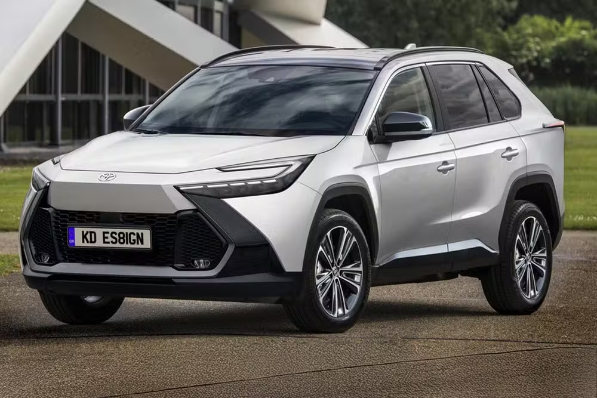

Exclusivo: novo Toyota Corolla Cross nacional terá motor híbrido plug-in flex
Segunda geração do SUV médio chega nos próximos anos com versões de 5 e 7 lugares e
motorizações flex, HEV flex e PHEV flex, mas sem opção elétrica
Por Leonardo Felix

Projeção do Toyota Corolla Cross 2028 — Foto: Kleber Silva/KDesignAG